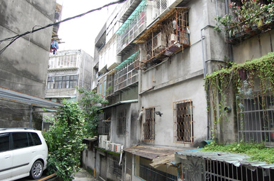
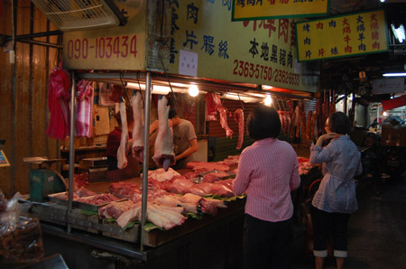
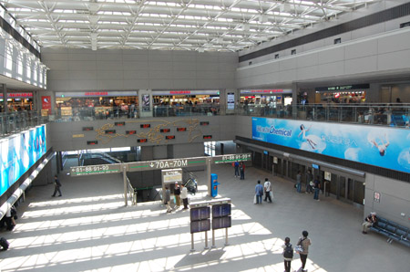
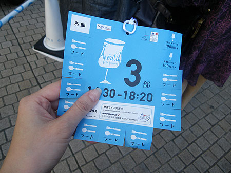
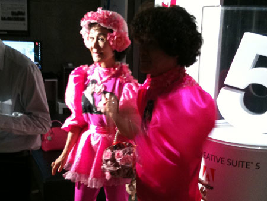
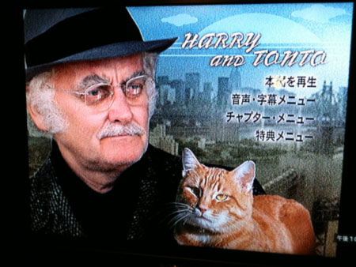
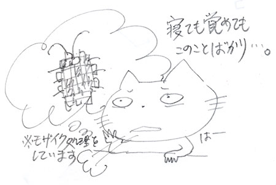
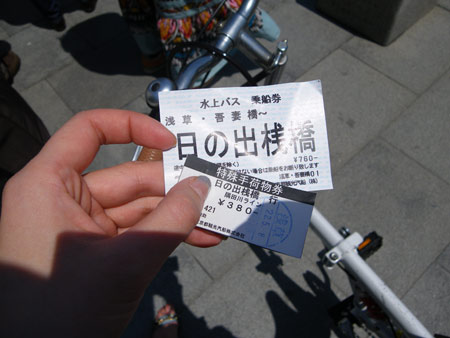
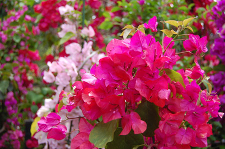

かに風味ブログ
-
06/19のツイートまとめ
kaniaji パブリックビューイング帰り。行くつもりなかったけど、行ったら行ったで楽しいな。試合後、久しぶりに踊ったー http://twitpic.com/1y5126 06-19 23:37 …
-
06/18のツイートまとめ
kaniaji 金曜夜にキアヌが出てる映画を見る、片手にワイン。甘露甘露。 06-18 21:56 台北行きから2週間。なんか台湾って中毒性あるんじゃないだろか。あーまた夜市だらだら歩きたい。 …
-
06/17のツイートまとめ
kaniaji しかし、しゃぶしゃぶとスパークリングワインは最高。ちょっと酸味があるタイプと組み合わせるのが好き。ロゼスパークリングもいい。 06-17 21:48 暑っついのに、しゃぶしゃぶ食べ…
-
06/16のツイートまとめ
kaniaji 久しぶりのマツパー帰り。ここんとこエクステ派だったけど、某睫毛育毛剤の効果が出てきたから地睫毛勝負。 06-16 20:53 きょうのお昼は、定例の女子外ごはん。昨晩の飲み会の反省…
-
06/15のツイートまとめ
kaniaji むー！英語車内アナウンスを聞くと旅心にスイッチ入っちゃうよ！こないだの旅行は点火前に薪をくべた感じだ。 06-15 23:00 隣のボックスシートでコロッケと缶チューハイの宴会開催…
-
06/14のツイートまとめ
kaniaji 生姜の炊込みおいしそう。夏は茗荷と紫蘇と胡麻の混ぜご飯も私的定番。 RT @doiyoshiharu 具は変えた方がいいと思います。夏には 大人向きですが、「生姜の炊き込みごはん」とか…
-
台北4
さて最終日。 昨晩は「ゴ」が出なかったみたい。ちょっと肌寒かったせいかなー…とその代わり起きたらノドが痛い。 あー！風邪引きはじめだー。 というわけで、薬局でトローチ購入。 錠剤のパックが毒色ですが…

-
台北3
さて3日目です。 昨晩も、ドミトリーの女の子たちが「ゴ」の方とお戯れ。 まーこんな感じのとこだから「ゴ」のお方も大所帯だろーなー MRTに乗って西門に移動 招き猫。結構店の前とかでみかける。…

-
台北2
台北2日目です。 昨晩は、早々に寝たのだけど、夜中、ドミトリーの女の子がきゃあきゃあ言っている声で目が覚めた。 どーも「ゴ」の方がお出ましになった様子。 キッチンは清潔とは言えない感じだったもんなー。…

-
ぶらり台湾・台北
JALのマイレージが直近で1万5千マイルほど消失することが判明し、急遽出掛けてまいりました。 期限マイル分を使おうとゆーことで、行き先は台北。 成田では特に見るものもないので、ギリギリチェックインして…

-
アペリティフの日＠六本木
6月4日はアペリティフの日とゆーことで、六本木のイベントに参加。 日本全国各地でアペリティフの日イベントが行われているけど、ここが総本山。なにしろ4部構成！参加は3部目。 会場30分前から並んだお…

-
5月まとめ
今年は春が無いと言われておりますが、ほんとにほんといきなり夏が来て、早々に熱中症になったりして大変でしたわ。やたらと熱を出してアイスしか食べられないとゆー日も。会社で吐きそうになったときは、もう気が遠…

-
最近見たDVD
最近、TSUTAYAディスカスの契約をしたので、あれこれDVD見てます。 ハズレも多いんだけど、おすすめとして美味しい＆猫映画を3本ばかりどーぞ。 ◆南極料理人 原作が面白かったので期待していた映画…

-
アレの季節
6月突入… 暖かくなると…暖かくなると… 台所が怖い！！ ゴ印さんのシーズン到来。 基本的に出てこないよう、引越時にもバルサン炊いて、 ゴミは貯めずに、エアコン排水パイプにも網を張り、換気扇は2…

-
ぐるっと港区
あちこちポタリングをしているうちに、自宅を始点にしてると限界があるなーということに気がついて、 ちょっと自転車ごと移動させてしまおうとゆーことに。 都合良く、近所に水上バス乗り場があって、調べてみたら…

-
花春うらら
花よりエビフライ

-
3Dかくめい！
アキバのヨドバシに行ったら、入り口で3D VIERAのイベントをやってた。 最近テレビでよくやっている石川遼選手が出てくるコマーシャルのやつです。 私は家で「んな演出過剰なー！テレビでしょがー！JAR…
-
おうちごはん
久しぶりにちゃんと料理。というわけで、タルト生地から作っておりますよー！ 小麦粉120g、バター25g、オリーブオイル大さじ2-3ぐらい、たまご１個をねりねり。 マッシュルームのタパス。スペインの…

-
まとめてどん２
戦闘機がごうごう着陸するところを見にいったりもしたりなんだり。 こういうものを準備したり練習することがない世の中になればいいのにね。 幼少期に「パパママバイバイ」という絵本を読んでから、戦闘機は「格…

-
まとめてどん！
浜松町の東芝ビルディング近くには猫がやまもり。 エシェゾーをタダ飲み。 私のブルゴーニュワイン、ピノノワール好きの原点。この美味しさは恋にうっとりするのと同じ気持ちにさせてくれる。きゅんと胸が響く…